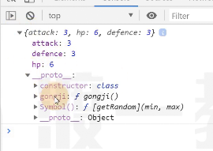
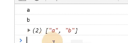

普通符号
符号是ES6新增的一个数据类型，它通过使用函数Symbol(符号名)来创建
// 创建一个符号
const syb1 = Symbol();
const syb2 = Symbol("abc");
console.log(syb1, syb2);
console.log(typeof syb1 === "symbol", typeof syb2 === "symbol") //true true符号设计的初衷，是为了给对象设置私有属性
符号具有以下特点：
- 没有字面量
- 使用 typeof 得到的类型是 symbol
- 每次调用 Symbol 函数得到的符号永远不相等，无论符号名是否相同
const syb1 = Symbol("abc");
const syb2 = Symbol("abc");
console.log(syb1 === syb2); //false- 符号可以作为对象的属性名存在，这种属性称为符号属性
//创建一个符号 const syb1 = Symbol("这是用于对象的一个属性"); // 符号可以作为对象的属性来使用 const obj = { a: 1, b: 2, [syb1]: 3 //符号属性 }
console.log(obj)

- 开发者可以通过精心的设计，让这些属性无法通过常规方式被外界访问
```js
// 用符号 外界就无法使用 对象
const hero = (function() {
const getRandom = Symbol();
return {
attack: 30,
hp: 300,
defence: 10,
gongji() { //攻击
//伤害：攻击力*随机数（0.8~1.1）
const dmg = this.attack * this[getRandom](0.8, 1.1);
console.log(dmg);
},
[getRandom](min, max) {// 根据最小值和最大值产生一个随机数
return Math.random() * (max - min) + min;
}
}
})()
console.log(hero);
hero[getRandom](3, 5); //会报错
// 用类来实现
const Hexo = (() => {
return class {
constructor(attack, hp, defence) {
this.attack = attack;
this.hp = hp;
this.defence = defence;
}
gongji() {
// 伤害：攻击力*随机数（0.8~1.1）
const dmg = this.attack * this[getRandom](0.8, 1.1);
console.log(dmg);
}
[getRandom](min, max) { // 根据最小值和最大值产生一个随机数
return Math.random() * (max - min) + min
}
}
})();
const h = new Hero(3, 6, 6)
// 用非常规方法来获取到symbol方法
const sybs = Object.getOwnPropertySymbols(Hero.prototype);
const prop = sybs[0];
console.log(h[prop](3, 5))
- 符号属性是不能枚举的，因此在 for-in 循环中无法读取到符号属性，Object.keys 方法也无法读取到符号属性// syb 无法通过枚举出来
const syb = Symbol();
const obj = {
[syb]: 1,
a: 2,
b:3
}
for(const prop in obj) {
console.log(prop);
}
console.log(Object.keys(obj))
- Object.getOwnPropertyNames 尽管可以得到所有无法枚举的属性，但是仍然无法读取到符号属性
- ES6 新增 Object.getOwnPropertySymbols 方法，可以读取符号// syb 无法通过枚举出来
const syb = Symbol();
const obj = {
[syb]: 1,
a: 2,
b:3
}
for(const prop in obj) {
console.log(prop);
}
console.log(Object.keys(obj)) // ["a", "b"]
console.log(Object.getOwnPropertyNames(obj)) // ["a", "b"]
// 得到的是一个符号属性的数组
const sybs = Object.getOwnPropertySymbols(obj);
console.log(sybs, sybs[0] === syb); // [Symbol()] true
- 符号无法被隐式转换，因此不能被用于数学运算，字符串拼接或其他隐式转换的场景，但符号可以显式转换为字符串，通过 String 构造函数进行转换即可，console.log 之所有可以输出符号，是它在内部进行了显式转换
const syb = Symbol();
console.log(syb * 2); //会报错 符号不能运算共享符号
根据摸个符号名称（符号描述）能够得到同一个符号
Symbol.for("符号名/符号描述") //获取共享符号const syb1 = Symbol.for();
cosnt syb2 = Symbol.for();
console.log(syb1 === syb2) //true
const obj1 = {
a: 1,
b: 2,
[syb1]: 3
}
const obj2 = {
a: "a",
b: "b",
[syb2]: "c"
}
console.log(obj1, obj2) //{a: 1, b:2, Symbol(abc): 3} {a: "a", b: "b", Symbol(abc): 3}
//用共享符号可以访问
const obj = {
a: 1,
b: 2,
[Symbol.for("c")]: 3
}
console.log(obj[Symbol.for("c")])// 模拟symbol.for
const SymbolFor = (() => {
const global = {}; //用于记录有哪些共享符号
return function(name) {
console.log(global)
// 如果global不存在 就创建 存在就直接使用已经存在的
if(!global[name]) {
global[name] = Symbol(name);
}
console.log(global);
return global[name]
}
})();
const syb1 = SymbolFor("abc")
const syb2 = SymbolFor("abc")
console.log(syb1 === syb2) //true知名（公共、具名）符号
知名符号是一些具有特殊含义的共享符号，通过Symbol的静态属性得到ES6延续了ES5的思想：减少魔法，暴露内部实现！
因此，ES6 用知名符号暴露了某些场景内部的实现
1.Symbol.hasInstance
该符号用于定义构造函数的静态成员，它将影响 instanceof 的判定
//判断obj隐式原型上是否有属于A的
obj instanceof A
// 等效于
A[Symbol.hasInstance](obj)function A() {
}
Object.defineProperty(A, Symbol.hasInstance, {
value: function(obj) {
return false;
}
})
const obj = new A();
console.log(obj instanceof A);
console.log(A[Symbol.hasInstance](obj));- [扩展] Symbol.isConcatSpreadable
该知名符号会影响数组的concat方法
- [扩展] Symbol.toPrimitive
该知名符号会影响类型转换的结果
- [扩展] Symbol.toStringTag
该知名符号会影响 Object.prototype.toString 的返回值
- 其他知名符号